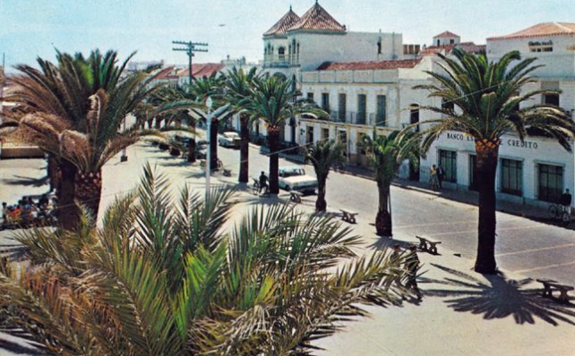
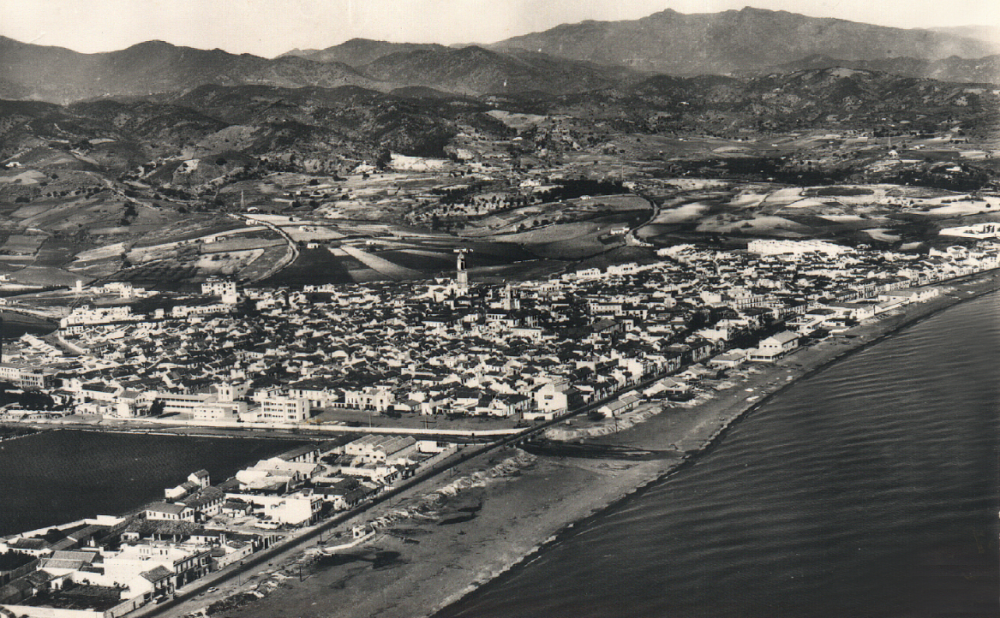
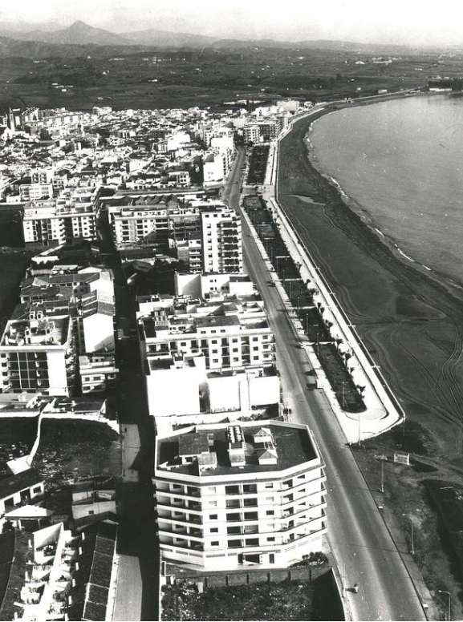

Histoire du Paseo Marítimo d'Estepona
Le Paseo Marítimo est aujourd'hui l'une des promenades les plus emblématiques de la Costa del Sol. Mais son évolution s'est faite en plusieurs étapes, d'un simple rivage de pêcheurs jusqu'à l'un des plus beaux fronts de mer d'Andalousie.
L'évolution du Paseo Marítimo
Six grandes périodes qui ont façonné la promenade
Un simple front de mer de pêcheurs
Avant l'arrivée du tourisme moderne, Estepona était un petit village de pêcheurs. Il n'existait pas de promenade structurée : la zone était composée de petites maisons, de barques, d'entrepôts de pêche et d'accès directs à la plage.
Le littoral était sauvage, sans urbanisation ni restaurants ouverts au public. Le bord de mer servait essentiellement à sécher les filets, réparer les barques, et conserver les sardines et anchois.
Naissance du Paseo Marítimo
Avec le boom touristique de la Costa del Sol, les premières sections du Paseo Marítimo sont construites pour accueillir les visiteurs. L'objectif : ouvrir Estepona sur la mer et créer un espace agréable pour marcher. Le premier tronçon s'étend autour de Playa de la Rada, le cœur de la ville.
- Bancs et palmiers pour les premiers promeneurs
- Premiers chiringuitos fixes en bord de mer
- Urbanisation progressive du front de mer
Le Paseo commence déjà à devenir un symbole de la ville.
Modernisation complète
Cette période marque la transformation majeure du paseo, qui devient une destination à part entière :
- Élargissement du chemin piéton
- Création de zones vertes et de parterres de fleurs
- Installation de fontaines et jeux pour enfants
- Construction du muret blanc caractéristique
- Nouveaux chiringuitos et restaurants plus modernes
- Piste cyclable improvisée sur certaines sections
La promenade devient une zone familiale, très fréquentée l'été.
Images du Paseo Marítimo
Aperçus de la promenade à différentes époques



Des années 2010 à aujourd'hui
La renaissance du front de mer
Rénovation & « ville jardin »
Estepona lance son ambitieux projet « Estepona, Jardín de la Costa del Sol », qui transforme profondément l'aspect du Paseo :
- Plantations massives de fleurs et d'arbres tropicaux
- Rénovation du sol, éclairage LED, nouveaux bancs et accès plage
- Nouvelle piste cyclable continue sur tout le tracé
- Réaménagement des plages et installation de douches
- Arrivée de chiringuitos plus haut de gamme (Malva, Bahía…)
Le paseo gagne en esthétique et devient l'un des plus beaux d'Andalousie.
Un paseo long de plus de 3 km
Le Paseo Marítimo d'Estepona s'étend désormais de La Punta de Plata jusqu'à La Punta de Doncella (Port d'Estepona), reliant les quartiers La Rada, El Centro et Seghers.
- Chiringuitos et restaurants en bord de mer
- Aires de jeux pour enfants
- Zones sportives (fitness, pétanque…)
- Concerts en plein air l'été
- Piste cyclable continue et sécurisée
C'est un espace iconique, utilisé chaque jour par les familles, touristes, sportifs, promeneurs et cyclistes.
Connexion totale du littoral
Estepona travaille encore à l'extension de sa promenade maritime :
- Connecter tout le littoral par un paseo continu jusqu'à Casares d'un côté et Marbella de l'autre
- Intégrer davantage d'espaces verts et de zones de repos
- Créer une zone entièrement piétonne entre le centre et la plage
Le Paseo Marítimo d'Estepona n'est pas seulement une promenade : c'est un projet en mouvement, qui continue d'évoluer avec la ville.
Localisation du Paseo Marítimo
Facilement accessible depuis le centre historique, Playa de la Rada ou le port